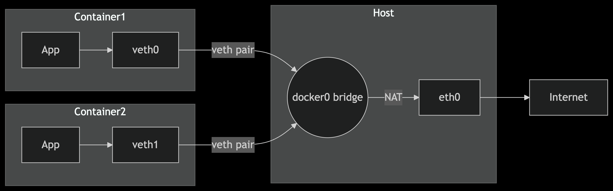
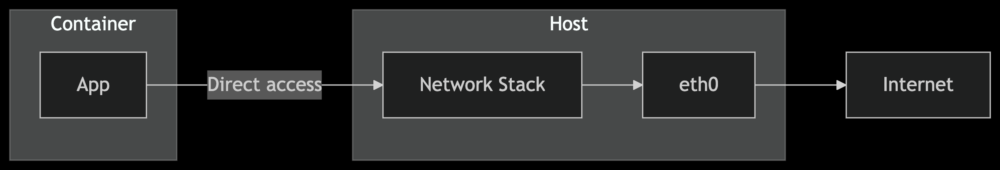
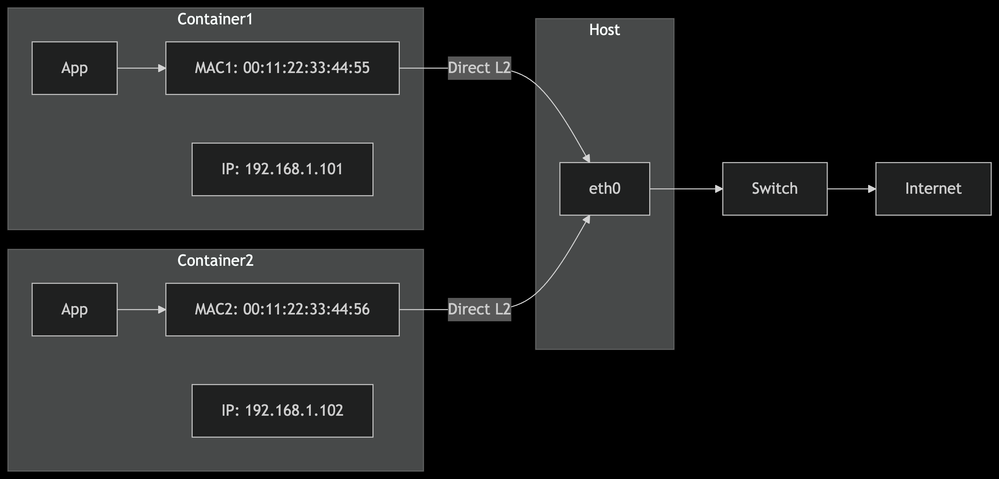

🌐 Сети в Docker
Сетевое взаимодействие — одна из ключевых составляющих при работе с контейнерами.
Изолированные по умолчанию, контейнеры должны иметь возможность общаться друг с другом и с внешним миром.
Docker предоставляет гибкую и мощную систему для управления сетями, однако для production-систем, особенно на базе Kubernetes, используются более продвинутые подходы.
💡 Тезис
Современная работа с сетями в Docker строится на кастомных bridge сетях для изоляции и встроенном DNS для обнаружения сервисов на одном хосте.
В multi-host окружениях (кластерах) стандарт де-факто — Kubernetes с CNI-плагинами (Calico, Cilium), которые обеспечивают производительность, безопасность и сетевые политики.
⚙️ Режимы сетевой среды
Docker предоставляет несколько драйверов, которые определяют, как контейнер будет взаимодействовать с сетью хоста и другими контейнерами.
| Характеристика | bridge (кастомная) |
host |
macvlan |
overlay |
|---|---|---|---|---|
| Область действия | Один хост | Один хост | Один хост | Несколько хостов (кластер) |
| Изоляция | ✅ Высокая (межконтейнерная) | 🔻 Нет (контейнер использует сеть хоста) | ✅ Видим как отдельный хост в сети | ✅ Изолирует сервисы по overlay-сети |
| DNS Discovery | ✅ Есть (имена контейнеров) | ❌ Нет встроенного DNS | ❌ Нет встроенного DNS | ✅ Встроенный DNS между контейнерами в сети |
| Доступ снаружи | Через проброс портов (-p) |
Автоматический (общая сеть с хостом) | Как полноценное сетевое устройство | Через ingress/внешние LB |
| Производительность | ✅ Хорошая | 🚀 Максимальная | ✅ Высокая (если правильно настроить) | 🔻 Зависит от наладки оверлея (обычно медленнее) |
| Безопасность | ✅ Хорошая | 🔻 Низкая (нет сетевой изоляции) | ✅ Высокая (можно ограничить MAC/IP) | ✅ Хорошая (в рамках кластера) |
| Сложность настройки | ✅ Простая | ✅ Простая | 🔺 Требует настройки VLAN/физического интерфейса | 🔺 Требует Swarm или других инструментов |
| Основной сценарий | Связь контейнеров одного приложения | Производительность-критичные задачи | Интеграция в существующие L2-сети | Микросервисные приложения в кластере |
📊 Схемы архитектур
🌉 Bridge Mode

🏠 Host Mode

🔌 Macvlan Mode

Использование host режима
Режим host полностью снимает сетевую изоляцию.
Любой порт, открытый в контейнере, будет открыт на хосте.
Этот режим полезен для приложений, которым нужен прямой доступ к сетевым интерфейсам хоста (например, VPN-клиенты или утилиты мониторинга), но он создает риски безопасности и может привести к конфликту портов.
Особенности macvlan
- Требует Ethernet-интерфейса хоста в режиме
promiscuous. Не работает с Wi-Fi, так как стандарт 802.11 не позволяет одному клиенту использовать несколько MAC-адресов. - Контейнер с
macvlanне сможет общаться с хостом напрямую — это ограничение данной сетевой модели.
⚙️ Пример создания macvlan сети
🔗 Механизмы связи
| Характеристика | --link |
Services (Swarm) | Networks (кастомные) |
|---|---|---|---|
| Механизм | Записи в /etc/hosts + переменные окружения |
DNS + встроенный Load Balancer | Встроенный DNS и IP-адресация |
| Поддержка DNS | ❌ Нет | ✅ Да (внутри overlay сети) | ✅ Да (внутри custom bridge сети) |
| Автоматическое обновление | ❌ Нет — не реагирует на рестарт контейнеров | ✅ Да — автоматическая регистрация/удаление | ✅ Да — DNS-имена обновляются при перезапуске |
| Изоляция сервисов | 🔻 Нет | ✅ Да — по overlay-сетям | ✅ Да — по custom-сетям |
| Совместимость с Compose | ⚠️ Частичная | ✅ Полная (через deploy) |
✅ Полная |
| Масштабирование | ❌ Нет | ✅ Встроено в концепцию | ❌ Не встроено, но возможно вручную |
| Управление состоянием | ❌ Нет | ✅ Да (состояние кластера хранится) | ❌ Нет — Docker не отслеживает "сервисность" |
| Актуальность | ❌ Устарело (DEPRECATED) | ⚠️ Только в рамках Swarm (не для Kubernetes) | ✅ Современно, рекомендуется |
| Основной сценарий | Ранние версии Docker, примитивная связь | Распределенные сервисы в Swarm-кластере | Современные приложения на одном хосте или с proxy |
🧭 Service Discovery
В микросервисной архитектуре приложениям нужно автоматически находить друг друга.
Этот процесс называется Service Discovery.
⚙️ Встроенный DNS
Самый простой способ — использовать встроенный DNS-сервер, который работает в кастомных bridge сетях.
Docker автоматически присваивает контейнеру DNS-имя, совпадающее с его именем.
⚙️ Пример работы встроенного DNS
-
Создаем сеть и контейнеры:
-
Проверяем разрешение имен из контейнера
web:# Устанавливаем утилиты, если их нет в образе docker exec web apk add --no-cache curl bind-tools # Проверяем DNS-запись с помощью getent docker exec web getent hosts db # Ожидаемый вывод (IP-адрес может отличаться): # 172.19.0.2 db # Проверяем связь с помощью curl docker exec web curl http://db:5432 # curl: (7) Failed to connect to db port 5432 after 0 ms: Connection refusedПолучение
Connection refusedозначает, что DNS-имя успешно разрешилось, но порт на контейнереdbотклоняет соединение (что нормально, так как PostgreSQL не обслуживает HTTP-запросы).
🛠️ Внешние инструменты
Для более сложных сценариев используются внешние инструменты.
- Key-Value хранилища (Consul, etcd): Сервисы при старте регистрируют себя в хранилище.
- Reverse Proxy (Traefik, NGINX): Прокси-серверы, которые автоматически отслеживают запуск и остановку контейнеров и обновляют свою конфигурацию маршрутизации.
✅ Рекомендация: Traefik для Docker
Traefik — идеальный выбор для управления доступом к контейнерам на одном хосте.
Он интегрируется с Docker API, отслеживает лейблы контейнеров и автоматически настраивает роутинг.
DNS в Kubernetes: CoreDNS
В то время как встроенный DNS в Docker подходит для одного хоста, в кластерах Kubernetes эту роль выполняет CoreDNS.
Он стал промышленным стандартом, заменив более ранние решения (например, kube-dns и SkyDNS), и обеспечивает гибкую и расширяемую систему обнаружения сервисов.
🔌 Сетевые плагины
Зачем здесь CNI, если мы про Docker?
Хотя CNI-плагины вроде Calico и Cilium не работают с Docker напрямую, они упоминаются здесь по двум причинам:
- Они используются в production-средах, куда обычно мигрируют после разработки в Docker.
- Они демонстрируют, какие сетевые возможности есть у Kubernetes, но недоступны в Docker.
Таким образом, понимание CNI важно для построения масштабируемой, безопасной сетевой архитектуры — даже если вы пока используете только Docker.
💥 Несовместимость
Важно понимать ключевое различие в сетевых моделях:
- Docker Engine использует собственную библиотеку
libnetworkдля управления драйверами (bridge,hostи др.). - Kubernetes использует стандарт CNI (Container Network Interface), который поддерживается средами исполнения
containerdиCRI-O.
Контекст
Ни Calico, ни Cilium не работают с docker engine напрямую — они применяются в Kubernetes-кластерах.
Но знание их принципов и возможностей полезно даже при проектировании локальных окружений, чтобы понимать, где заканчиваются возможности Docker и начинается потребность в полноценной сетевой архитектуре.
А как же Docker Swarm?
Docker Swarm был встроенным оркестратором Docker, использующим overlay сети для связи контейнеров между хостами.
Однако с 2020-х годов развитие Swarm фактически остановилось, и сообщество перешло на Kubernetes как более гибкое и мощное решение.
⚖️ Сравнение CNI
| Критерий | Flannel | Calico | Cilium |
|---|---|---|---|
| Тип маршрутизации | Overlay (VXLAN) | Layer 3 маршрутизация (BGP / IPIP / WireGuard) | Kernel-level маршрутизация через eBPF |
| Overlay-сеть | ✅ Да | ❌ Нет (по умолчанию) | ❌ Нет |
| Сетевые политики | ❌ Нет | ✅ Поддерживаются (Kubernetes NetworkPolicy + CalicoPolicy) | ✅ Поддерживаются (L3–L7, включая HTTP/HTTPS) |
| Поддержка eBPF | ❌ Нет | ⚠️ Частичная (в новых версиях как опция) | ✅ Полная eBPF-реализация (по умолчанию) |
| Производительность | ⚠️ Средняя (overlay накладные расходы) | ✅ Высокая (нативная маршрутизация) | 🚀 Очень высокая (eBPF без iptables/OVS) |
| Наблюдаемость (Observability) | ❌ Ограниченная | ⚠️ Базовая (через Prometheus и Flow Logs) | ✅ Расширенная: Hubble, трассировка запросов, видимость L7 |
| Безопасность | ❌ Отсутствует | ✅ Защита L3/L4 | ✅ Защита L3–L7 (включая TLS/HTTP политики, identity-aware) |
| Service Mesh без sidecar | ❌ Нет | ❌ Нет | ✅ Да (через eBPF-based transparent proxy) |
| Поддержка Kubernetes | ✅ Полная | ✅ Полная | ✅ Полная |
| Сложность настройки | 🟢 Низкая | 🟡 Средняя | 🔴 Выше средней (мощно, но требует понимания eBPF и политики) |
| Основной сценарий | Простой кластер без политик | Корпоративные среды с жесткими требованиями безопасности | Кластеры, где важна безопасность, производительность и L7-контроль |
🐝 eBPF и сети Docker
Хотя eBPF является основой для продвинутых CNI-плагинов в Kubernetes, его можно использовать и для улучшения сетей в "чистом" Docker.
Как eBPF используется с Docker
Программы eBPF могут быть прикреплены к сетевым интерфейсам хоста (например, docker0 или veth-парам контейнеров) для выполнения следующих задач:
- Высокопроизводительная фильтрация трафика: Создание файрволов с помощью XDP (eXpress Data Path), которые работают на уровне сетевого драйвера, до входа пакетов в сетевой стек ядра.
- Наблюдаемость (Observability): Сбор детальных метрик о сетевом трафике, задержках и ошибках без модификации приложений. Инструменты, такие как Pixie, bpftrace или Hubble (от Cilium), могут отслеживать системные вызовы и сетевые пакеты, связанные с конкретными контейнерами.
- Безопасность: Мониторинг и блокировка подозрительной сетевой активности в реальном времени.
🛡️ Безопасность сетей
По умолчанию сетевая конфигурация Docker может нести риски.
Риски безопасности
- Default bridge: Все контейнеры в сети
bridgeпо умолчанию могут общаться друг с другом без ограничений. Это позволяет скомпрометированному контейнеру атаковать соседние. - Host network: Снимает всю сетевую изоляцию, открывая порты контейнера на хосте и позволяя ему "слушать" трафик хоста.
- Отсутствие Firewall: Docker не настраивает межконтейнерный файрвол.
🛡️ Методы защиты
- Используйте кастомные
bridgeсети: Базовый и обязательный шаг для изоляции групп контейнеров. - Флаг
--internal: Создает сеть, контейнеры в которой могут общаться друг с другом, но не имеют доступа к внешней сети. - Сетевые политики (Kubernetes): В Kubernetes для гранулярного контроля трафика используются
NetworkPolicy, реализуемые CNI-плагинами. - Инструменты хоста: Используйте
iptablesна хосте, а также профили AppArmor и seccomp для ограничения возможностей контейнера на уровне ядра.
🐛 Отладка сетей
💻 docker exec
Позволяет запустить сетевые утилиты внутри контейнера для проверки связи "изнутри".
ping <hostname>: Проверка базовой доступности и разрешения имен.curl <hostname>:<port>: Проверка доступности TCP-порта и работы приложения.ip addrилиifconfig: Просмотр сетевых интерфейсов внутри контейнера.getent hosts <hostname>: Проверка работы встроенного DNS Docker.
🦈 tcpdump и tshark
Мощные инструменты для анализа трафика. Их можно запустить:
- На хосте, слушая интерфейс
docker0или конкретныйvethинтерфейс контейнера. - Внутри контейнера, если они установлены, для анализа трафика с точки зрения самого приложения.
⚙️ Пример с tcpdump на хосте
🚪 nsenter
Позволяет войти в сетевое пространство имен (network namespace) работающего контейнера прямо с хоста.
Это дает возможность использовать все сетевые утилиты хоста для отладки сети контейнера, как если бы вы находились внутри него.
⚙️ Пример с nsenter
🛠️ Практические команды
docker network create
Создает новую пользовательскую сеть.
docker network ls
Выводит список всех сетей.
docker network inspect
Показывает подробную информацию о сети.
docker network connect
Подключает контейнер к сети.
docker network disconnect
Отключает контейнер от сети.
docker network rm
Удаляет одну или несколько пользовательских сетей.